File: 000570.gt.txt (if the image is defective, simply delete all Arabic text and the line will be excluded)
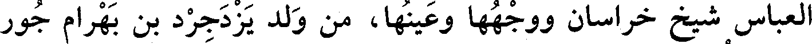
العباس شيخ خراسان ووجهها وعينها، من ولد يزدجرد بن بهرام جور
File: 000571.gt.txt (if the image is defective, simply delete all Arabic text and the line will be excluded)
ملك الفرس.
File: 000572.gt.txt (if the image is defective, simply delete all Arabic text and the line will be excluded)
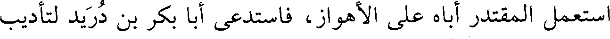
استعمل المقتدر أباه على الأهواز، فاستدعى أبا بكر بن دريد لتأديب
File: 000573.gt.txt (if the image is defective, simply delete all Arabic text and the line will be excluded)
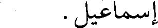
إسماعيل.
File: 000574.gt.txt (if the image is defective, simply delete all Arabic text and the line will be excluded)
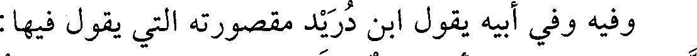
وفيه وفي أبيه يقول ابن دريد مقصورته التي يقول فيها:
File: 000575.gt.txt (if the image is defective, simply delete all Arabic text and the line will be excluded)
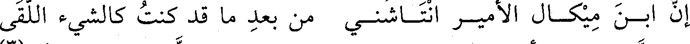
إن ابـن ميكـال الأميـر انتـاشنـي من بعد ما قد كنت كالشيء اللقى
File: 000576.gt.txt (if the image is defective, simply delete all Arabic text and the line will be excluded)
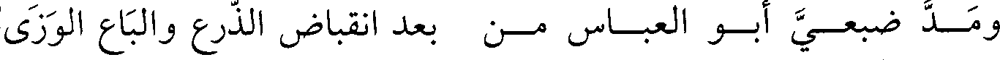
ومـد ضبعـي أبـو العبـاس مـن بعد انقباض الذرع والباع الوزى
File: 000577.gt.txt (if the image is defective, simply delete all Arabic text and the line will be excluded)
201
File: 000578.gt.txt (if the image is defective, simply delete all Arabic text and the line will be excluded)
119 - عبدالرحمن بن محمد بن إدريس بن كامل، أبو محمد
File: 000579.gt.txt (if the image is defective, simply delete all Arabic text and the line will be excluded)
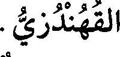
القهندزي.
File: 000580.gt.txt (if the image is defective, simply delete all Arabic text and the line will be excluded)
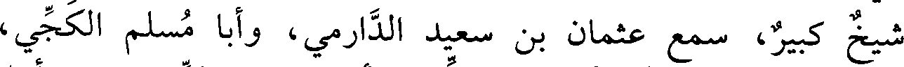
شيخ كبير، سمع عثمان بن سعيد الدارمي، وأبا مسلم الكجي،
File: 000581.gt.txt (if the image is defective, simply delete all Arabic text and the line will be excluded)
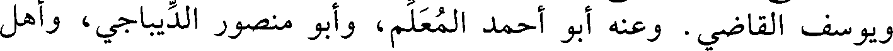
ويوسف القاضي. وعنه أبو أحمد المعلم، وأبو منصور الديباجي، وأهل
File: 000582.gt.txt (if the image is defective, simply delete all Arabic text and the line will be excluded)
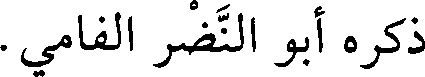
ذكره أبو النضر الفامي.
File: 000583.gt.txt (if the image is defective, simply delete all Arabic text and the line will be excluded)
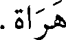
هراة.
File: 000584.gt.txt (if the image is defective, simply delete all Arabic text and the line will be excluded)
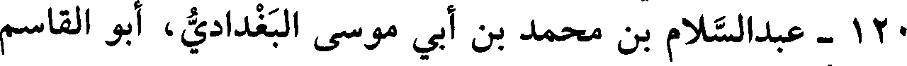
120 - عبدالسلام بن محمد بن أبي موسى البغدادي، أبو القاسم
File: 000585.gt.txt (if the image is defective, simply delete all Arabic text and the line will be excluded)
المخرمي الصوفي.
File: 000586.gt.txt (if the image is defective, simply delete all Arabic text and the line will be excluded)
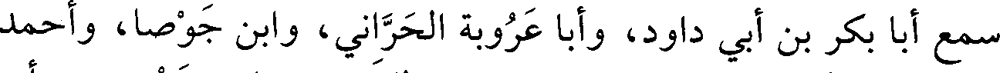
سمع أبا بكر بن أبي داود، وأبا عروبة الحراني، وابن جوصا، وأحمد
File: 000587.gt.txt (if the image is defective, simply delete all Arabic text and the line will be excluded)
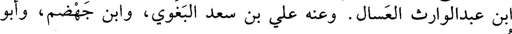
ابن عبدالوارث العسال. وعنه علي بن سعد البغوي، وابن جهضم، وأبو
File: 000588.gt.txt (if the image is defective, simply delete all Arabic text and the line will be excluded)
نعيم.
File: 000589.gt.txt (if the image is defective, simply delete all Arabic text and the line will be excluded)
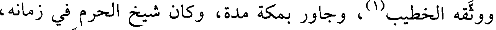
ووثقه الخطيب(1)، وجاور بمكة مدة، وكان شيخ الحرم في زمانه،
File: 000590.gt.txt (if the image is defective, simply delete all Arabic text and the line will be excluded)
رحمه الله، ممن جمع بين علم الشريعة وعلم الحقيقة، جاور زمانا.
File: 000591.gt.txt (if the image is defective, simply delete all Arabic text and the line will be excluded)
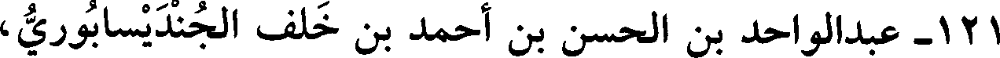
121 - عبدالواحد بن الحسن بن أحمد بن خلف الجنديسابوري،
File: 000592.gt.txt (if the image is defective, simply delete all Arabic text and the line will be excluded)
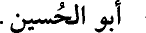
أبو الحسين.
File: 000593.gt.txt (if the image is defective, simply delete all Arabic text and the line will be excluded)
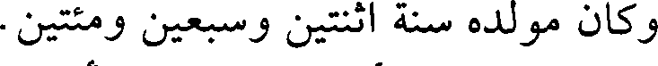
وكان مولده سنة اثنتين وسبعين ومئتين.
File: 000594.gt.txt (if the image is defective, simply delete all Arabic text and the line will be excluded)
122 - علي بن أحمد بن علي، أبو الحسن المصيصي.
File: 000595.gt.txt (if the image is defective, simply delete all Arabic text and the line will be excluded)
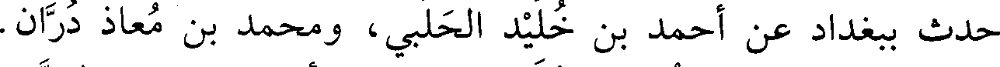
حدث ببغداد عن أحمد بن خليد الحلبي، ومحمد بن معاذ دران.
File: 000596.gt.txt (if the image is defective, simply delete all Arabic text and the line will be excluded)
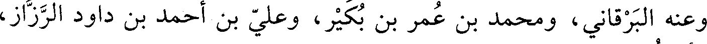
وعنه البرقاني، ومحمد بن عمر بن بكير، وعلي بن أحمد بن داود الرزاز،
File: 000597.gt.txt (if the image is defective, simply delete all Arabic text and the line will be excluded)
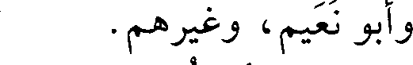
وأبو نعيم، وغيرهم.
File: 000598.gt.txt (if the image is defective, simply delete all Arabic text and the line will be excluded)
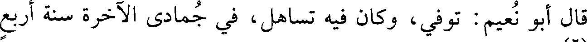
قال أبو نعيم : توفي، وكان فيه تساهل، في جمادى الآخرة سنة أربع
File: 000599.gt.txt (if the image is defective, simply delete all Arabic text and the line will be excluded)
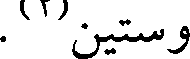
وستين(2).
To Save: `Ctrl+s`, make sure to choose `Webpage, complete`!